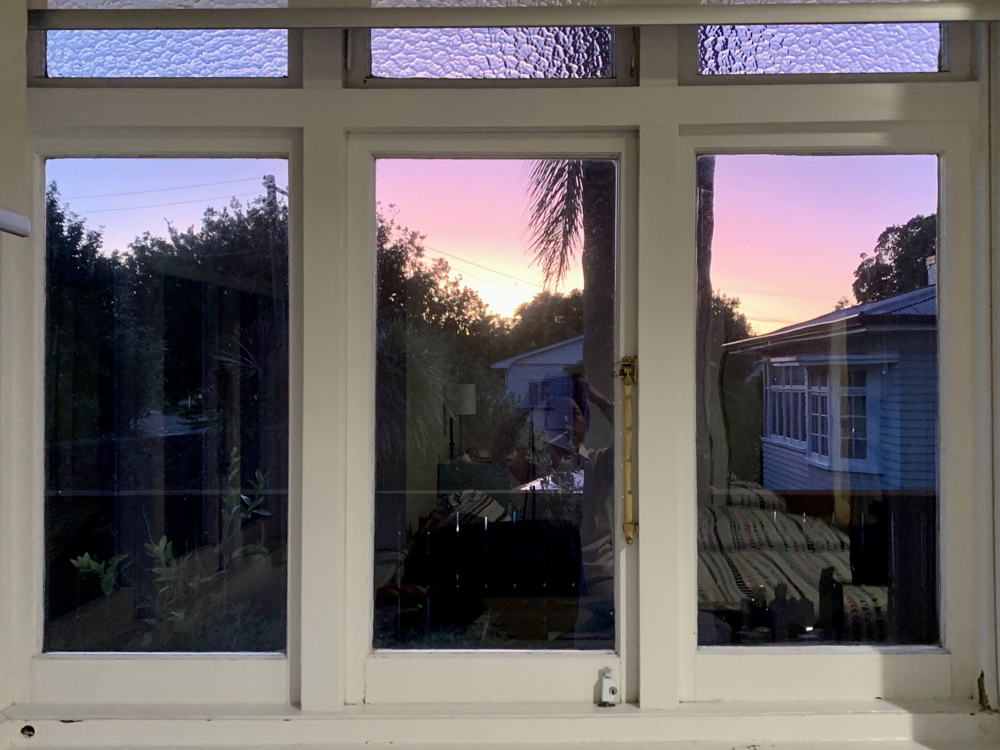

All About Me
Junior student from Japan, at Lake Forest College.
Major: Chemistry and Economics | Minor: Environmental Studies.
My goal is to expand friendships globally and use my curiosity to create a more sustainable earth.
Photos



Junior student from Japan, at Lake Forest College.
Major: Chemistry and Economics | Minor: Environmental Studies.
My goal is to expand friendships globally and use my curiosity to create a more sustainable earth.
